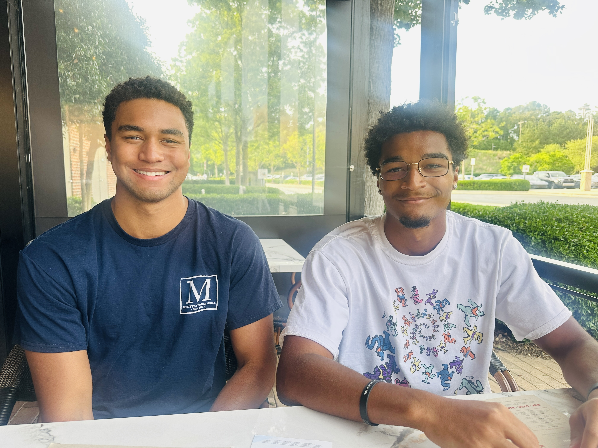
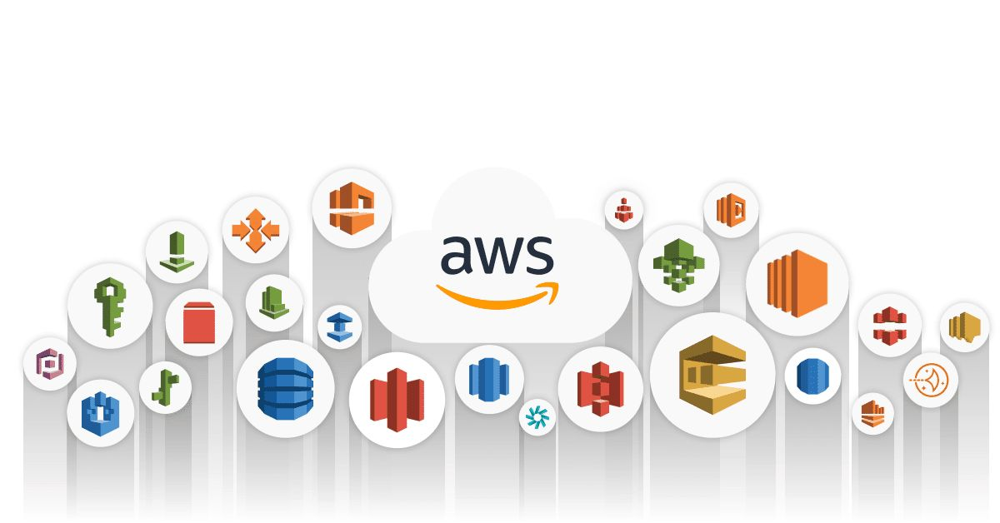

Intro

Hey! I'm Kevin Williams (on the right), a Statistics major at Florida State University with a strong focus on cloud infrastructure, data pipelines, and automation. I'm an AWS Certified Solutions Architect with hands-on experience building containerized systems, CI/CD pipelines, and Infrastructure as Code using Terraform.
I'm interested in data engineering, cloud platforms, and scalable backend systems. Currently exploring the intersection of statistical computing and cloud infrastructure while building real-world projects that solve practical problems. Check out my recent projects to see what I've been working on.
Projects

Cloud Portfolio Website with Terraform & AWS
Built a cloud-native portfolio website deployed on AWS using S3, CloudFront CDN, and Terraform Infrastructure as Code. Implemented automated CI/CD pipelines with GitHub Actions using OIDC authentication, security headers, and CloudFront OAI for secure content delivery.
View on GitHub
Cloud-Native CI/CD Pipeline on AWS (ECS + Fargate)
Built an automated CI/CD pipeline using GitHub Actions, Docker, and AWS ECS/Fargate to deploy containerized services with logging, health checks, and versioned releases. Demonstrates end-to-end automation from code push to production deployment.
View on GitHub
Serverless News Analytics Platform
Event-driven serverless platform built with AWS Lambda that ingests and analyzes news articles from multiple sources. Features async processing with SQS, Redis-based deduplication (30-50% storage savings), Parquet data lake on S3, and SQL analytics via Athena. Includes EventBridge scheduled ingestion, API Gateway rate limiting, and comprehensive Terraform IaC. Migrated from ECS to Lambda achieving 60-75% cost reduction while maintaining scalability.
View on GitHub
Python Playground (Systems & Data Experiments)
A structured Python repository of mini-projects and experiments applying data structures, API integration, error handling, and object-oriented design to real-world problems. Includes various system design patterns and automation scripts.
View on GitHub
About
I'm a Statistics major at Florida State University (Class of 2028) with a minor in Computational Science. My interest lies at the intersection of statistical computing, cloud infrastructure, and data engineering. I enjoy building systems that are scalable, reliable, and automated.
Education
Florida State University — Tallahassee, FL
B.S. in Statistics | Minor in Computational Science
Expected Graduation: May 2028
Certifications
AWS Certified Solutions Architect – Associate (SAA-C03)
Achieved: January 2026
View Credential
Technical Skills
- Cloud Platforms: AWS (EC2, ECS, EKS, Fargate, IAM, CloudWatch, S3, VPC)
- Infrastructure as Code: Terraform
- Containers & Orchestration: Docker, Kubernetes, AWS ECS/Fargate
- CI/CD: GitHub Actions
- Programming: Python, Shell, Node.js
- Data & APIs: JSON, REST APIs, data ingestion pipelines
- Tools: Git, Linux, VS Code
I believe in continuous learning and hands-on experimentation. When I'm not working on cloud projects, I'm exploring new tools, contributing to GitHub repositories, or diving into statistical computing challenges.
Contact
I'm always interested in internships, project collaborations, and opportunities in cloud infrastructure and data engineering. Feel free to reach out!
Email: kevin.williams2218@gmail.com
Phone: 919-744-5774
Location: Tallahassee, FL
Download Resume